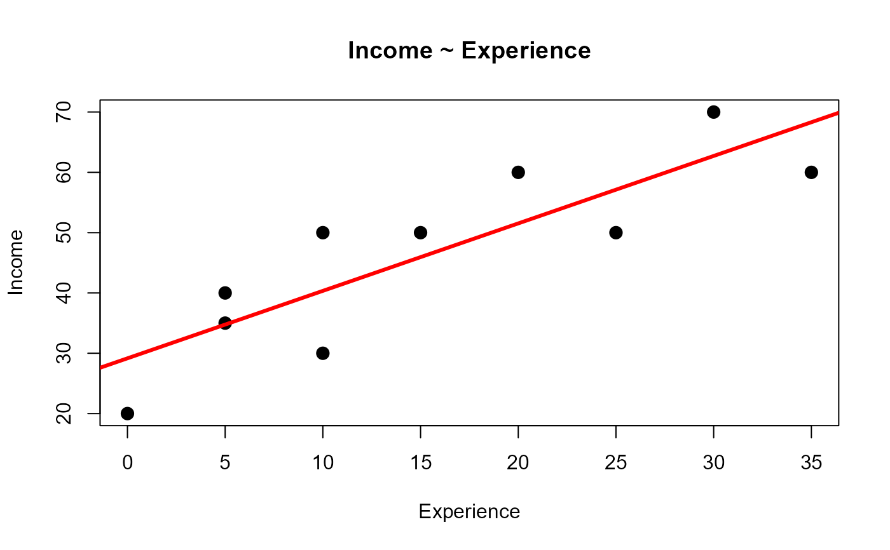

Workers Data
A toy data set comprised of information on workers Income in relation
to other variables, used for illustrating linear and multiple regression.
data("workers")
Format
A data frame with 10 observations on the following 4 variables.
Incomeincome from the job, a numeric vector
Experiencenumber of years of experience, a numeric vector
Skillskill level in the job, a numeric vector
Gendera factor with levels
FemaleMale
Examples
data(workers) plot(Income ~ Experience, data=workers, main="Income ~ Experience", pch=20, cex=2)# simple linear regression reg1 <- lm(Income ~ Experience, data=workers) abline(reg1, col="red", lwd=3)# quadratic fit? plot(Income ~ Experience, data=workers, main="Income ~ poly(Experience,2)", pch=20, cex=2)reg2 <- lm(Income ~ poly(Experience,2), data=workers) fit2 <-predict(reg2) abline(reg1, col="red", lwd=1, lty=1)lines(workers$Experience, fit2, col="blue", lwd=3)# How does Income depend on a factor? plot(Income ~ Gender, data=workers, main="Income ~ Gender")points(workers$Gender, jitter(workers$Income), cex=2, pch=20)means<-aggregate(workers$Income,list(workers$Gender),mean) points(means,col="red", pch="+", cex=2)lines(means,col="red", lwd=2)